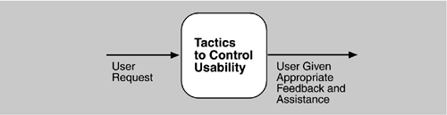
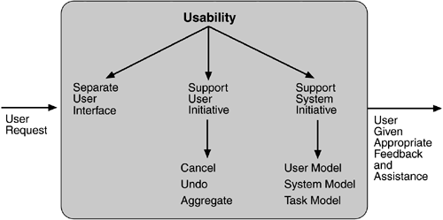

| [ Team LiB ] |
|
5.7 Usability TacticsRecall from Chapter 4 that usability is concerned with how easy it is for the user to accomplish a desired task and the kind of support the system provides to the user. Two types of tactics support usability, each intended for two categories of "users." The first category, runtime, includes those that support the user during system execution. The second category is based on the iterative nature of user interface design and supports the interface developer at design time. It is strongly related to the modifiability tactics already presented. Figure 5.12 shows the goal of the runtime tactics. Figure 5.12. Goal of runtime usability tactics RUNTIME TACTICSOnce a system is executing, usability is enhanced by giving the user feedback as to what the system is doing and by providing the user with the ability to issue usability-based commands such as those we saw in Chapter 4. For example, cancel, undo, aggregate, and show multiple views support the user in either error correction or more efficient operations. Researchers in human–computer interaction have used the terms "user intiative," "system initiative," and "mixed initiative" to describe which of the human–computer pair takes the initiative in performing certain actions and how the interaction proceeds. The usability scenarios we enumerated in Chapter 4, Understanding Quality Attributes, combine initiatives from both perspectives. For example, when canceling a command the user issues a cancel—"user initiative"—and the system responds. During the cancel, however, the system may put up a progress indicator—"system initiative." Thus, cancel demonstrates "mixed initiative." We use this distinction between user and system initiative to discuss the tactics that the architect uses to achieve the various scenarios. When the user takes the initiative, the architect designs a response as if for any other piece of functionality. The architect must enumerate the responsibilities of the system to respond to the user command. To use the cancel example again: When the user issues a cancel command, the system must be listening for it (thus, there is the responsibility to have a constant listener that is not blocked by the actions of whatever is being canceled); the command to cancel must be killed; any resources being used by the canceled command must be freed; and components that are collaborating with the canceled command must be informed so that they can also take appropriate action. When the system takes the initiative, it must rely on some information—a model—about the user, the task being undertaken by the user, or the system state itself. Each model requires various types of input to accomplish its initiative. The system initiative tactics are those that identify the models the system uses to predict either its own behavior or the user's intention. Encapsulating this information will enable an architect to more easily tailor and modify those models. Tailoring and modification can be either dynamically based on past user behavior or offline during development.
DESIGN-TIME TACTICSUser interfaces are typically revised frequently during the testing process. That is, the usability engineer will give the developers revisions to the current user interface design and the developers will implement them. This leads to a tactic that is a refinement of the modifiability tactic of semantic coherence:
Figure 5.13 shows a summary of the runtime tactics to achieve usability. Figure 5.13. Summary of runtime usability tactics |
| [ Team LiB ] |
|